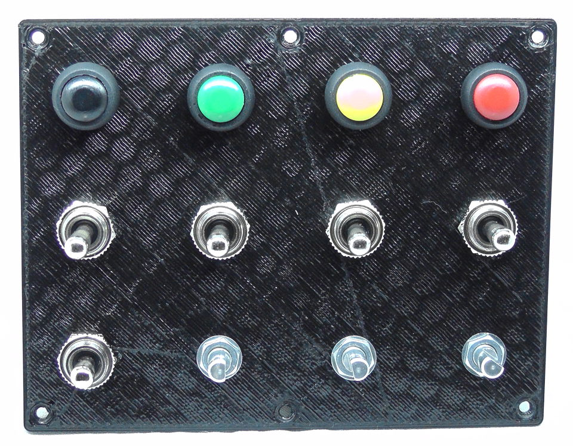
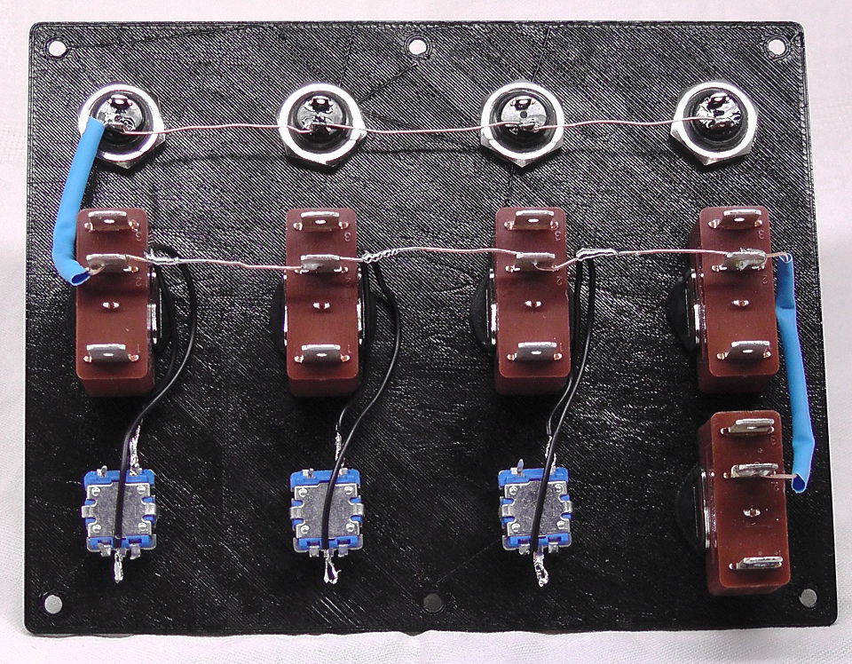
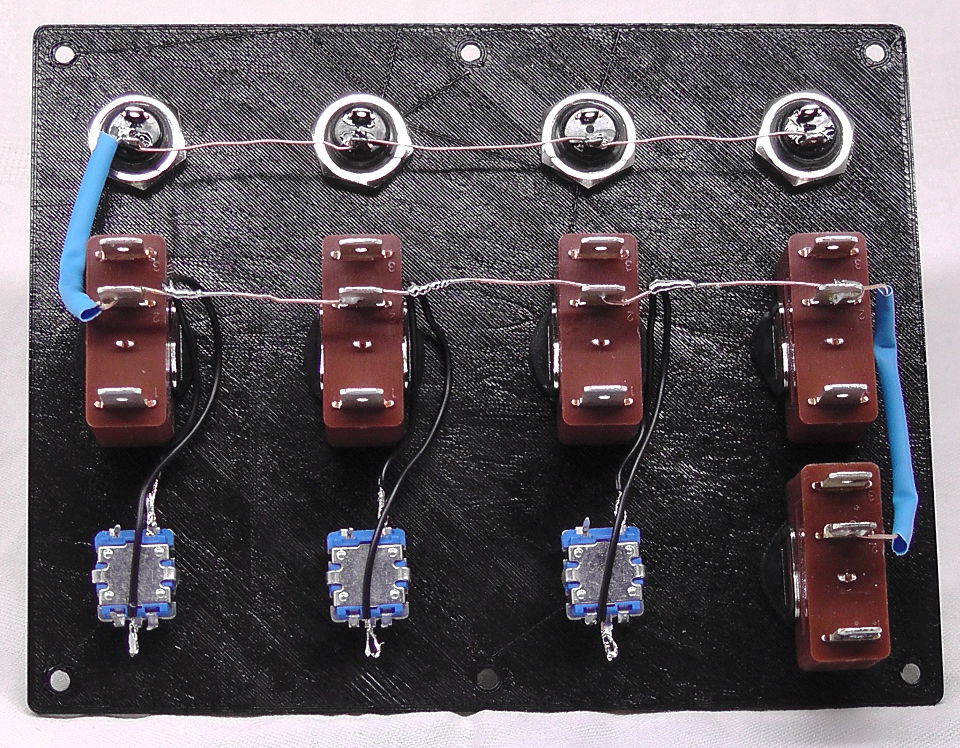

-
Begin by printing the main case and a face plate found in "Main Module\Case\140mm wide\STL\".
Never mix two different versions of body and face plate. A version 3 body will most likely not work with a version 4 face plate!- Main Module - Body - v4
This is the main body of the button box. The "STAND ALONE" version does not come with additional mounting holes for the side box. - Main Module - Face Plate - v4
- TOP ROW 1x16mm + 3x13mm
This face plate has a hole for a 16mm switch in the top left corner.

- TOP ROW 4x13mm
This face plate uses the same buttons on the top row.
 - NO HOLES
WARNING You need to add holes to this face plate. Only use this if you don't have access to SolidWorks.
- TOP ROW 1x16mm + 3x13mm
- Main Module - Body - v4
-
The box can be mounted so the bottom sits flush on the table ("Flush Brackets") or the bottom of the box will sit below whatever it is mounted to ("Lowered Brackets").
The filename also indicates the type of bracket. A "90 degree" bracket will make the box sit perpendicular to your desk while a "75 degree" bracket is tilted back by 25 degrees.
Add Image of Proto 2 Mount here- Mount Bracket 90 degrees
The box stand vertical with this bracket. - Mount Bracket 75 degrees
The box will be tilted back by 25 degrees with this bracket.
- Mount Bracket 90 degrees
-
Next, screw the switches onto the face plate and heat up your soldering iron.
Make soldering easy by orienting all switches the same way.

-
Start with soldering all ground terminals together as seen in the image below. Be careful with the small plastic switches from China. I solder these at 300C for 2 seconds. Let the part cool down before you try again if you don't get the joint done quickly.
My FFB wheel generates a lot of vibration which will be transfered into the button box as well. So I stick the wire through the eye on every contact to make the joint stronger.
 

-
Next solder wires to the remaining terminals. These need one wire per terminal and should be long enough to reach the main board once it is mounted in the case.
Notice how the wires are not the same length once they are bundeled up. Yes, I had to solder small extensions to all the short wires you see in the image - so much fun.

-
At this point you need to decide if you want to build only the main box or if you want to connect the side box as well. This can
be changed later but you have to desolder a bunch of wires.
- Stand alone
Connect one wire to GND (ground) on the teensy - Multi Plexed for upto 32 buttons and 3 rotary encoders
Connect one wire to GND (ground) on the teensy
#######################
- Stand alone
-
Now connect the other button terminals to the Teensy 3.2 board. Start with GND (Ground), then pins 1 to 12 and finally pins 14-23. DO NOT USE Pin 13, it is for the LED so connecting a switch may not work without removing the LED first.
It should look similar to this when you are done. Make sure you place the Teensy behind the top row since those switches are the shortest and give the Teensy more room in the case.
Make sure you write down the pin number for every buttong!
-
(Optional but highly recommended)
Verify the operation of every switch with a multimeter. Set it to test continuity (beeps when you short the leads), connect one lead to ground and the other to the switch terminal connected to the Teensy.
The multimeter should only beep when you press the button. Also test that you don't have a short to the button next to it since a short may happen when you solder the wires to the Teensy board.
- TO DO - Add Info on how to instal Arduino IDE with Teensy extension!!!!!!!!!!!!!!!!!!!!!!!!!!!!!
-
Open the Sketch and click on the "CONFIG" tab within the sketch. Here you will see a list of every button with the pin and function assigned to each one.
Take a look at the following tables. These are the keys you can tell then Teensy to send to your computer.